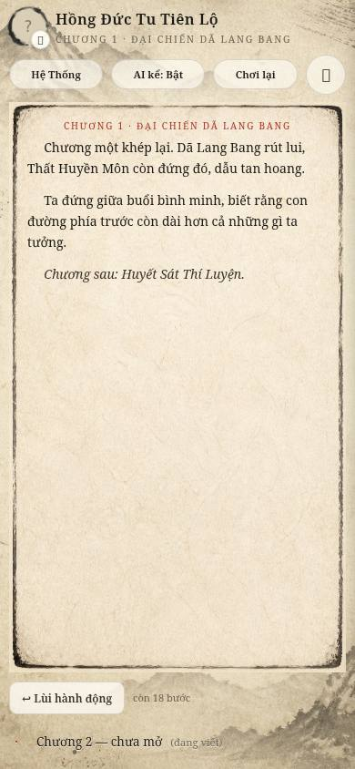
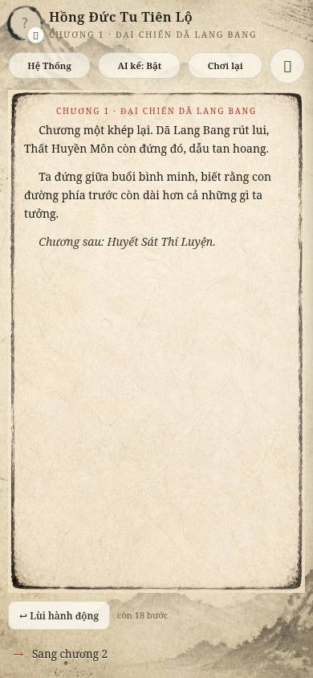
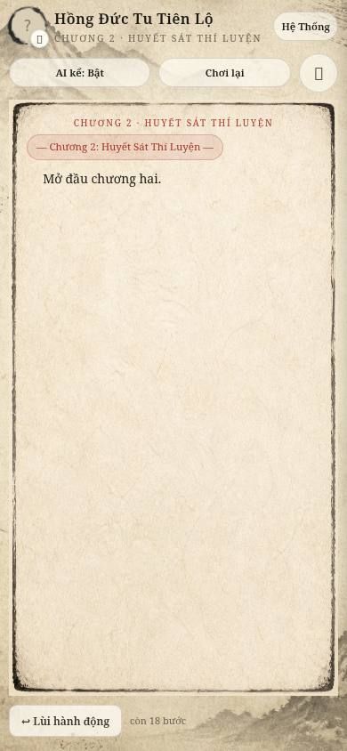

Đã làm xong A + C
Nút chuyển chương đã có trên bản chơi thật. Chương 2 chưa viết nên nút đang khoá.
1. Anh sẽ thấy gì
Tới màn kết Chương 1, dưới lời kết có thêm một nút. Hiện tại nút đó mờ và ghi “Chương 2 — chưa mở (đang viết)”. Bấm vào không có gì xảy ra, đúng ý anh: thấy nút mờ còn hơn bấm rồi mới biết chưa có gì.
Ba ảnh dưới là ảnh chụp thật trên khổ điện thoại 390px, không phải hình vẽ:
Màn kết Chương 1 — nút đang khoá

Khi đã có dữ liệu Chương 2 — nút mở
Ảnh này em nạp tạm một Chương 2 rỗng để chứng minh nút mở đúng lúc. Chữ trên nút đổi thành “→ Sang chương 2” và bấm được.

Bấm xong — sang Chương 2, giữ nguyên nhân vật

Và đây là ảnh chụp từ chính trang live
Không phải bản chạy trên máy em — em mở đúng địa chỉ công khai, chơi 18 bước, rồi chụp:

2. Giữ nguyên những gì khi sang chương
Đây là phần quan trọng nhất của phương án A. Sang chương không tạo nhân vật mới. Em kiểm bằng máy, in ra từng thứ:
| Thứ | Kết quả |
|---|---|
| Bạc | giữ nguyên |
| Cảnh giới, tu vi | giữ nguyên |
| Túi đồ, kỹ năng | giữ nguyên |
| Hảo cảm với người quen | giữ nguyên |
| Cờ sự kiện đã xảy ra | giữ nguyên |
| Đoạn mở đầu Chương 2 | theo nhóm xuất thân |
3. Em đã kiểm những gì
| Phép kiểm | Số |
|---|---|
| Bộ kiểm engine (JS) | 151 đạt / 0 hỏng |
| Bộ kiểm API (Python, chạy server thật) | 171 đạt / 0 hỏng |
| Chạy thật trên trình duyệt khổ 320 / 390 / 768 | đạt cả ba |
| Lỗi JS khi chơi | không có |
Em chơi thật bằng cách bấm: gõ tên, bấm “Bắt đầu”, bấm chọn 18 lần tới màn kết, rồi mới kiểm nút. Không phải gọi hàm tắt.
4. Em sửa thêm một lỗi tự tìm ra
Em sửa: giờ kiểm chương đích có dữ liệu trước, chỉ khi chắc chắn sang được mới ghi vào ngăn lùi. Có phép kiểm riêng khoá lại chuyện này.
5. Còn lại gì
Chỉ còn viết nội dung Chương 2. Cơ chế đã sẵn: anh đưa file chuong2.json vào là nút
tự mở, không phải sửa mã lần nữa. Trang web cũng tự dò file chuong2.json và
chuong3.json khi tải, thiếu thì thôi.
Một chuyện nhỏ để anh khỏi bối rối: mở trang ra sẽ thấy hai dòng 404 chuong2.json và
404 chuong3.json trong bảng Network của trình duyệt. Đó không phải lỗi — trang hỏi thử
xem chương đó có chưa, chưa có thì thôi. Người chơi không thấy gì, chỉ người mở công cụ kiểm tra mới thấy.